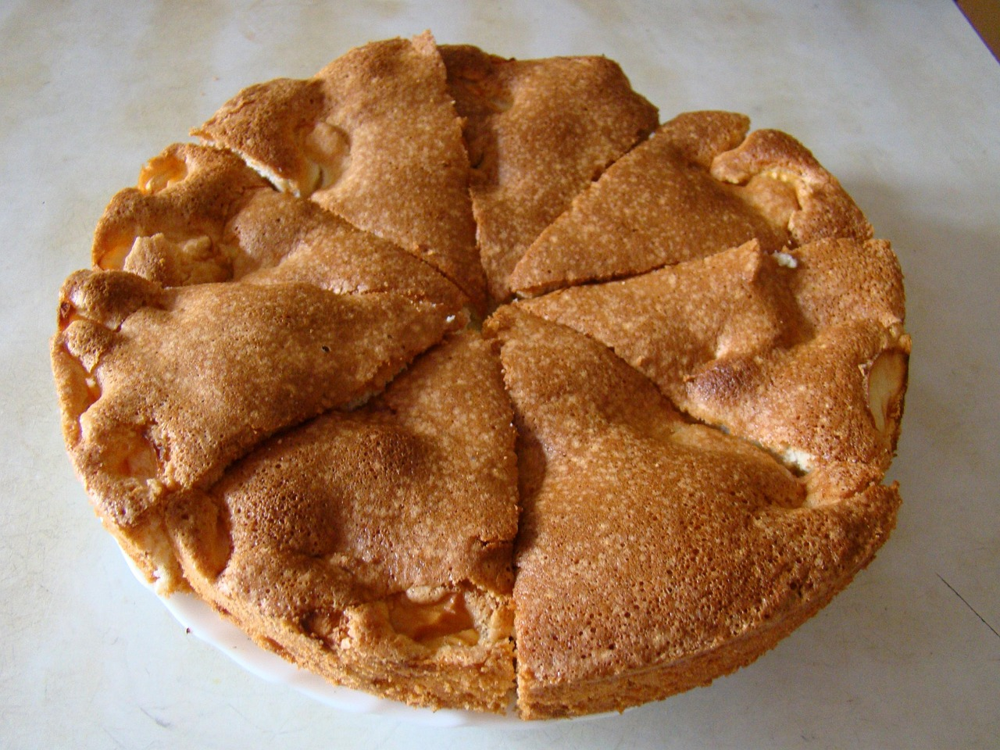

Apple Pie by Grandma Ople

Ingredients:
- Apples
- Granny smith apples are recommended.
- Butter
- This will be used for the filling.
- Flour
- This will get cooked into a paste.
- Sugar
- A blend of regular and brown sugar is recommended.
- Pie Crust
- If it's your first time making pies, it's recommended you buy this pre-made.
Instructions:
- Make the filling:
- On the stove, make a paste with flour and butter.
- Add the sugar and water and bring to a boil. Simmer, then remove from heat
- Assemble the Pie:
- Press one crust into a pie plate. Place the sliced apples on the bottom crust.
- Use the top crust to make a lattice crust according to the recipe below.
- Pour the butter-sugar mixture over the lattice crust.
- Bake the Pie:
- Bake the pie in a preheated oven until the apples are soft and the crust is golden brown.
- Bake the pie at 425 degrees Fahrenheit for 15 minutes.
- Reduce the temperature down to 350 degrees and keep baking for another 35-45 minutes.